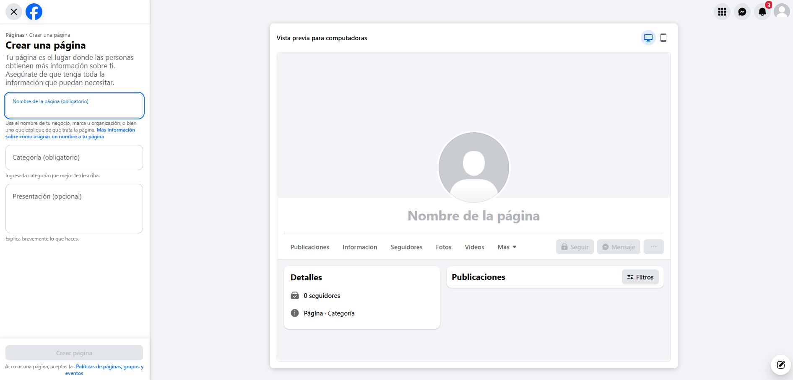
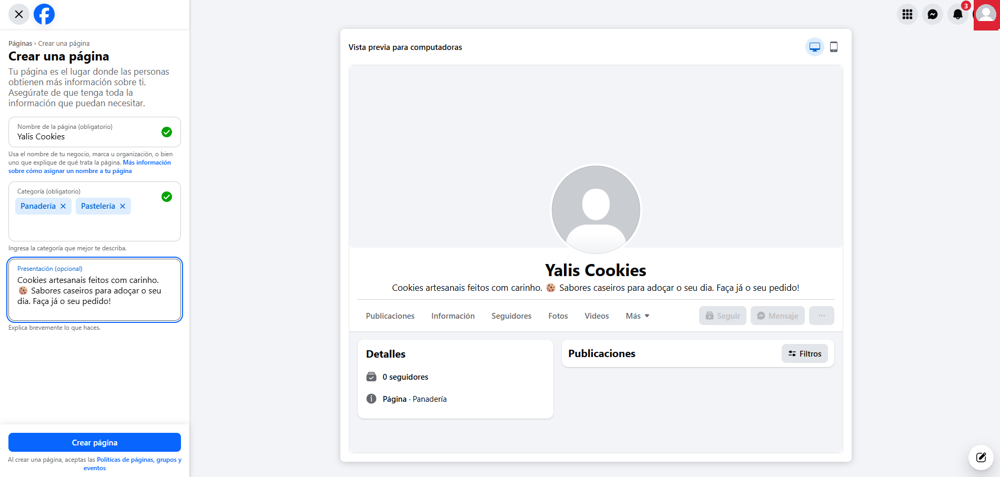
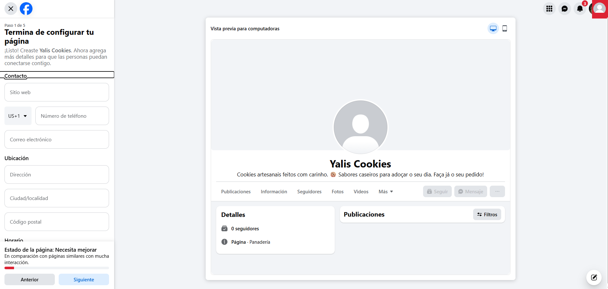
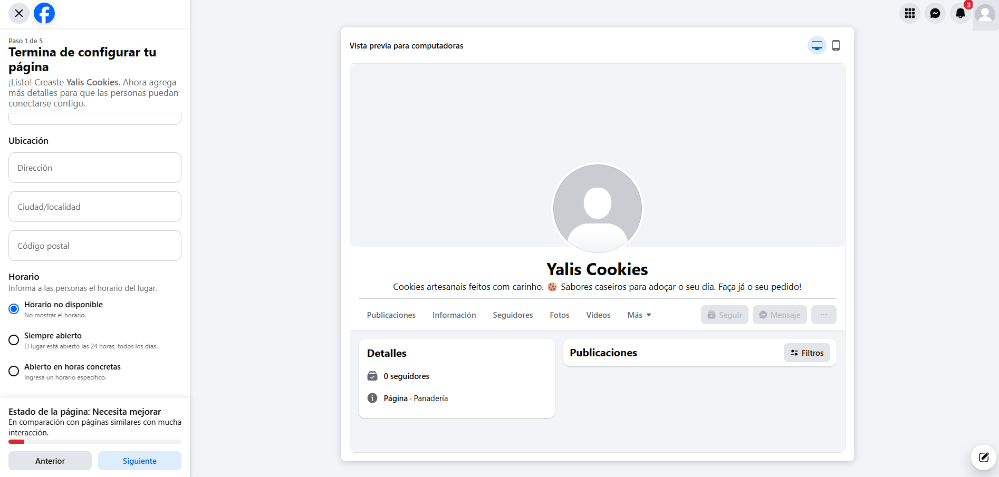
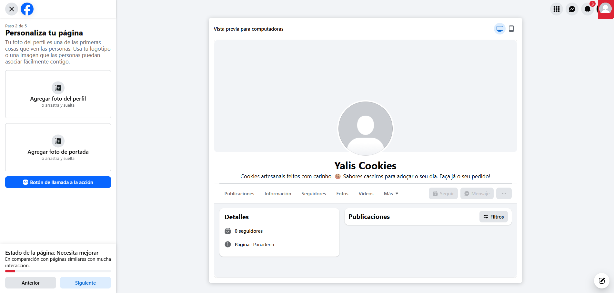
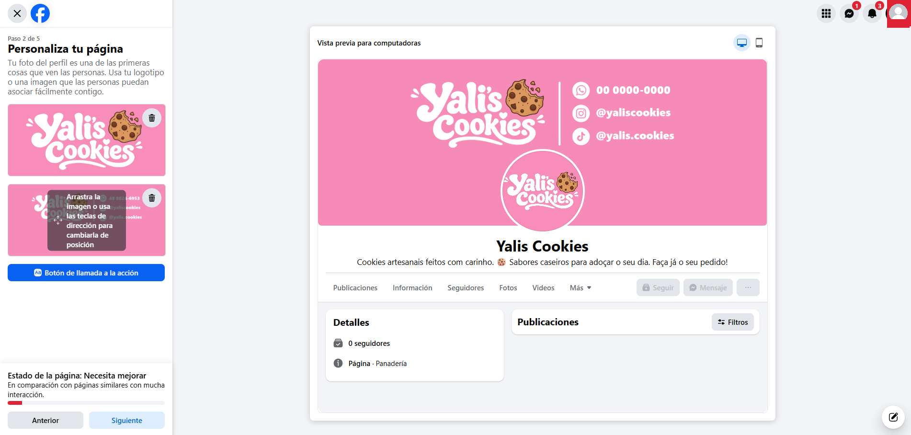
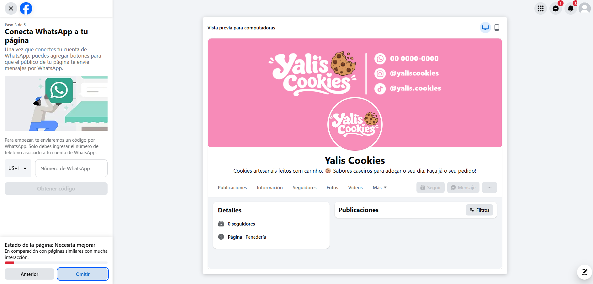
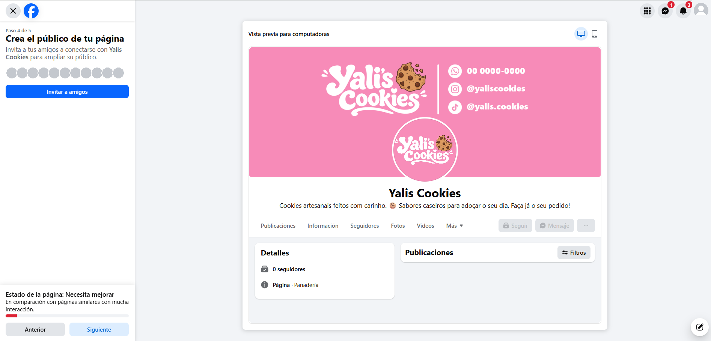
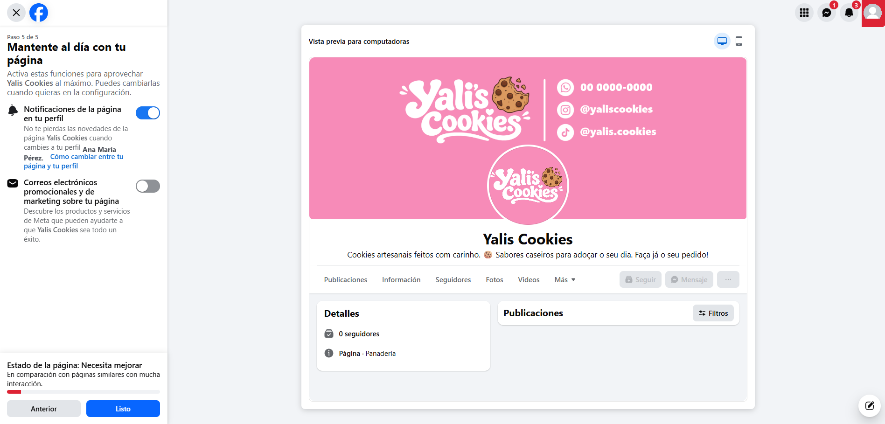
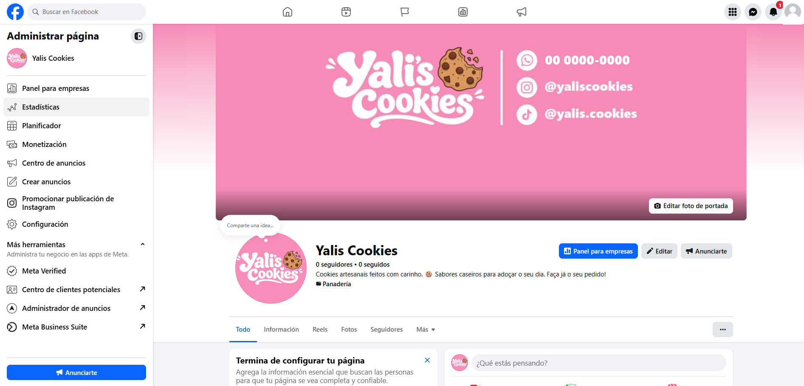

Cómo crear una página de Facebook, paso a paso¶
Guía para crear una página de Facebook sin que Facebook se ponga estricto contigo. Vas despacio, un paso a la vez y mirando las fotos. Si una pantalla no se parece a la foto, no toques nada y pide ayuda.
En las fotos usamos de ejemplo una página llamada Yalis Cookies. El número de teléfono y las personas que se ven son de ejemplo.
Antes de empezar¶
Qué vas a lograr: una página de Facebook lista para usar, con nombre, categoría, descripción, foto de perfil y portada. Es el día 1. El día 2 son los ajustes de cuidado (ver más abajo).
Qué necesitas:
- Una computadora con internet.
- La cuenta de Facebook que va a ser la dueña de la página.
- El logo de tu negocio (para la foto de perfil) y una portada lista (ver "La portada").
- Unos 20 minutos.
Dos palabras que vas a ver mucho:
| Palabra | Qué quiere decir |
|---|---|
| Página (o fanpage) | La "cara" de tu negocio en Facebook. La ven los clientes. No es tu perfil personal. |
| Categoría | El tipo de negocio. Facebook la muestra traducida al idioma de quien mira la página. |
El plan por días¶
Una página no se arma en un solo día. Se reparte así:
| Día | Qué haces | Estado de la guía |
|---|---|---|
| Día 1 | Crear la página con nombre, categoría y descripción. Subir foto de perfil y portada. Sin teléfono, WhatsApp ni ubicación. | Lista, con fotos (Partes 1 a 3) |
| Día 2 | Apagar las reseñas. Poner el género en "Información". Configurar el asistente de moderación. | Próximamente, con fotos |
| Después | Crear el Instagram de la página, programar publicaciones en Meta Business Suite, meter la página al portfolio comercial (BM), conectar Instagram y página, y empezar a usarla con la cuenta de anuncios. | Próximamente. Los días de cada uno se definen al escribirlos |
Regla de oro: un día, una cosa. No hagas el día 2 el mismo día que el 1, aunque Facebook te deje.
Por qué se hace despacio¶
Facebook no publica cuántas páginas se pueden crear por día. Lo que sí hace es vigilar señales raras: muchas páginas seguidas, desde la misma conexión y con cuentas nuevas. Cuando las ve, te avisa "creaste demasiadas páginas" o bloquea la cuenta por un tiempo.
Por eso esta guía va por día y una sola página a la vez. Ese orden no es una regla de Facebook: es la práctica que usamos para correr menos riesgo.
Si tu cuenta es nueva: antes de crear páginas conviene "calentarla" unos 5 días, usándola como una persona normal (ver el feed, dar "me gusta", publicar algo, agregar de a poco a algunos amigos). Si tu cuenta ya tiene tiempo y hace mucho que no creas páginas, puedes saltarte esto.
Parte 1. Crear la página¶
Paso 1.1. Entra con la cuenta que va a ser la dueña y abre esta dirección:
https://www.facebook.com/pages/create
Te aparece la pantalla "Crear una página". A la derecha ves cómo va quedando.

Paso 1.2. Llena tres cosas:
- Nombre de la página. El nombre de tu negocio. Aparece una tilde verde cuando está bien.
- Categoría. Escribe una palabra (por ejemplo
Panadería) y elige una opción de la lista. Puedes elegir más de una. Si no sale lo que buscas, prueba con otra palabra parecida (Pastelería,Repostería). - Presentación. Una o dos frases sobre lo que haces. Es opcional, pero conviene ponerla.

¿La página es en otro idioma? Escribe la presentación en el idioma de tus clientes. La categoría no importa: Facebook la traduce sola (en español dice "Panadería", en portugués "Padaria").
Paso 1.3. Toca "Crear página". Facebook te lleva a "Termina de configurar tu página", un asistente de 5 pasos. Sigue con la Parte 2.
Parte 2. Terminar de configurar (los 5 pasos de Facebook)¶
Paso 1 de 5: contacto y ubicación¶
Facebook pide sitio web, teléfono, correo y dirección. Déjalos vacíos todos. Se agregan después, cuando haga falta. Una página nueva con pocos datos levanta menos sospechas que una cargada de datos el primer día.

Más abajo está el Horario. Marca "Horario no disponible". La dirección y la ciudad quedan vacías (no hay casilla para decir "sin ubicación"). Toca "Siguiente".

Paso 2 de 5: fotos¶
Aquí subes la foto de perfil (el logo) y la portada. Toca cada cuadro y elige el archivo.

Cuando subes la portada, puedes arrastrarla para moverla. Mira la vista previa de la derecha: la foto de perfil se come un pedazo de la portada por abajo, así que lo importante tiene que quedar arriba.

El botón de llamada a la acción ("Compre ahora", "Saiba mais"…): no lo pongas hoy. Casi todos piden la página web. Lo agregas cuando la tengas.
La portada¶
Qué medidas y qué tener en cuenta:
| Dato | Valor |
|---|---|
| Tamaño para subir | 1640 x 624 píxeles (se ve nítida) |
| Lo que se muestra en computadora | 820 x 312 |
| En el celular | Facebook corta los lados: deja lo importante en el centro |
| Foto de perfil | Tapa la parte de abajo. Pon logo y datos en la mitad de arriba |
¿Pones el teléfono en la portada? Si sigues la regla de "página sin número el primer día", no lo pongas todavía: ponlo solo si ya decidiste mostrarlo.
Paso 3 de 5: conectar WhatsApp¶
Facebook te ofrece conectar WhatsApp. Toca "Omitir". Se conecta más adelante, cuando la página ya esté asentada.

Paso 4 de 5: invitar amigos¶
Facebook te ofrece invitar a tus amigos. No lo hagas. Esos amigos son de tu perfil personal: invitarlos une tu perfil con la página. Toca "Siguiente".

Paso 5 de 5: notificaciones¶
Deja los interruptores como están: notificaciones de la página encendidas y correos de marketing apagados. Toca "Listo".

Parte 3. Tu página ya existe¶
Facebook te lleva a la página recién creada. A la izquierda ves el menú "Administrar página" y arriba la portada con tu logo.

Hasta aquí es el día 1. No sigas esta noche: Facebook ve mejor los cambios repartidos en varios días que todo de golpe.
Día 2 (próximamente con fotos)¶
Para el día siguiente (no el mismo día):
- Apagar las reseñas de la página, para no recibir malas calificaciones.
- Poner el género en "Información".
- Configurar el asistente de moderación para no recibir comentarios negativos.
Después vienen: crear el Instagram de la página, programar publicaciones en Meta Business Suite, meter la página al portfolio comercial (BM) y empezar a usarla con la cuenta de anuncios.
Si algo sale mal¶
| Lo que ves | Qué hacer |
|---|---|
| "Creaste demasiadas páginas" | Es un bloqueo temporal. No intentes crear otra con esa cuenta hasta que pase. |
| No sale mi categoría en la lista | Escribe otra palabra parecida y elige una opción de la lista. |
| La portada se corta en el celular | Tenías datos en los lados. Pon todo en el centro y vuelve a subirla. |
| La foto de perfil tapa mi portada | Sube el contenido: lo importante va en la mitad de arriba. |
| La página aparece "no publicada" o "restringida" | Entra a Configuración de la página > General y revisa los avisos. Para pedir revisión usa la Bandeja de entrada de ayuda (Support Inbox). |
| Me restringieron la cuenta | Facebook cuenta las infracciones: con 7 te bloquea un día para crear contenido (incluye páginas) y con 8, tres días. Espera y no crees nada hasta entonces. |
Fuentes: Cómo restringe cuentas Meta · Arreglar "creaste demasiadas páginas" · Páginas despublicadas. El ritmo por día es una práctica de la comunidad, no una norma publicada por Meta.